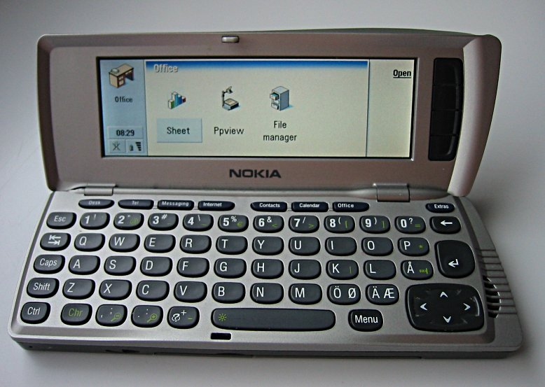

- 1996-2007, série de communicators chez nokia faisant l'impasse sur l'écran tactile mais avec un téléphone à caplet
- 2001, lancement du "WA3050", un des premiers téléphone à contenir un assistant personnel
- 2005, Google rachète la société Android
- 2007, Apple sort son premier "iphone", téléphone de 3,5 pouces, son système d'exploitation est iOS
- 2009, Samsung sort sont premier téléphone tactile "Samsung Galaxy i7500", son système d'exploitation est Android
- 2010, Sortie de l'iPhone 4 plus puissant, avec un meilleur appareil photo
- 2010, Les téléphones portables commence à avoir 2 à 4 coeurs dans leur processeur
- 2013, beaucoup de marque se mettent à faire des téléphones tactiles
- 2019, Samsung présente "Galaxy Fold", un téléphone pliable